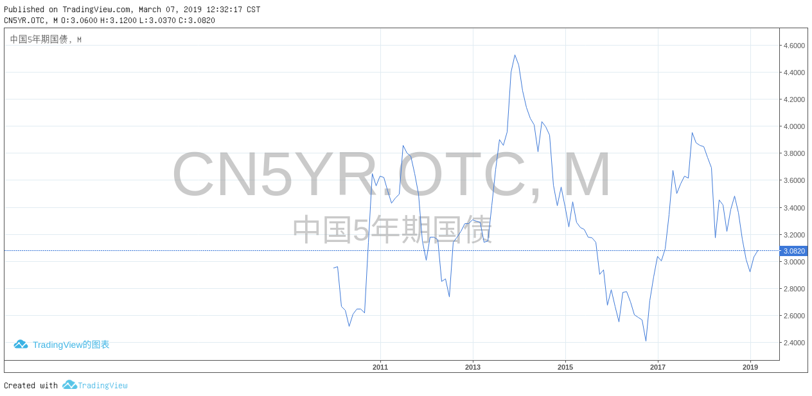
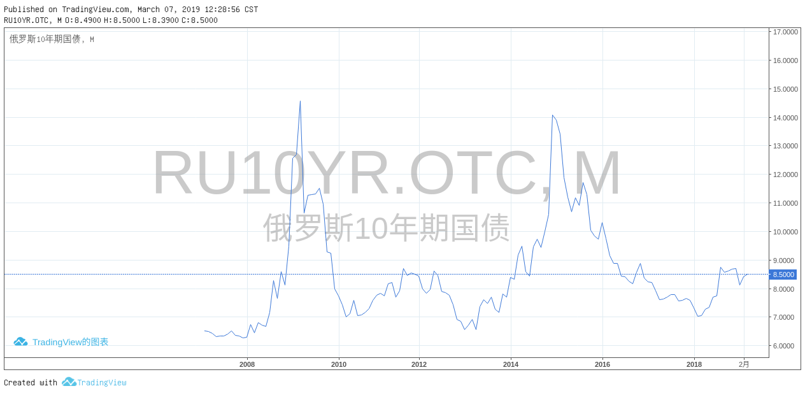
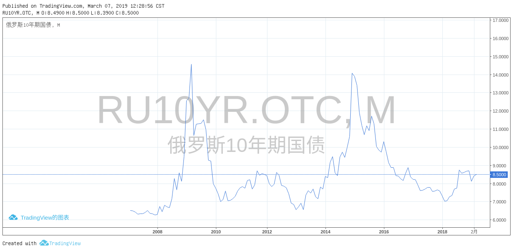

开放性指的是经济形态的开放性，新技术和管理模式使得资本有能力打破旧的社会均衡，而使得历史具有开放性
对资本来说，社会的稳定是自己正常运营的前提
新加坡建国总理李光耀生前所说的，民主即是福利的“拍卖会”。
懒于思考也是人性弱点的一部分，资本是不会漠视这一现实的。 在强大的资本面前，政治上的“一人一票”其实就是经济上的“一元一票”，就是说，政府只是资本的工具。
社会似乎在进步，但资本越来越没有道德标准 近代以来的经验表明，资本不会自掘坟墓，但资本为社会准备坟墓。 人们离不开资本，但资本往往造成奴役甚至“死亡”，在发达社会更多的是表现为娱乐至死，而在落后社会更多的是表现为劳累致死。
在新时代，如果人类光享受资本所带来的好处，却不能克服资本所带来的这些后果，未来人类面临的境况很难是乐观的。
从反面来说，即使国家通过政治力量“强行”崛起，但如果没有一个企业家群体的支撑，国家的崛起就会变得不可持续
历史地看，没有人会否认政治的重要性，但政治如果没有企业家群体的支撑，便往往是无效的政治、空洞的政治
简单地说，商人以赚钱为己任，一切以钱的多少来衡量企业的成功和自己的成就，而企业家则以改造世界为己任
第一，离钱太近，离科学技术太远。大多数人见钱眼开，唯利是图
第二，离权力太近，离使命太远 第三，离官员太近，离老百姓太远。经验地说，官商永远是一体的，但“官民一体”或者“商民一体”充其量也一直只是一个难以实现的理想
第四，离政治太近，离社会太远。所有社会，政治和经济不可绝然分离。企业家需要关心政治，不关心政治的企业家不会太成功。不过，企业家本身不是政治人物（除非弃商从政），不能把自己视为是政治人物。实际上，企业家的最大政治就是把自己的企业做好
第五，在国际社会上，离“机会”太近，离“规则”太远。
企业在国际市场所面临的挑战，和政府在国际组织所面临的挑战几乎就是一样的.全球化下的民族国家。在很大程度上，人们也可称之为“后主权国家”，因为尽管名义上各国仍然享受主权，但实际上国家所能享受的主权空间越来越少，出现理论和实际之间的巨大差异,全球化对小国家经济主权的负面影响更大
全球化尽管造就了“全球村”，但这个“全球村”并不存在一个高于主权国家的政府。这便是问题之所在。没有任何社会力量可以和资本（游资？）进行有意义的竞争或斗争。
在“一人一票”的民主政治下，对外的民族主义（无论是经济上的还是政治上的）和对内的民粹主义已经成为西方的主流。没有多少人会相信，在民族主义和民粹主义影响下的政府，可以实现“联合起来”的目标。
任何一个社会的均衡发展就要求在资本、政府和社会三者之间形成制衡。 从原始资本主义社会到福利社会的转型并非资本的转型，而是西方社会和政治改革的产物,美国在内的一些大国，内部解决不了问题，就把问题外部化.如果要实现资本、政治和社会三者之间的再均衡，人们很难把过高的期望寄托在国际层面
一战、二战都是各国“外部化”内部矛盾的结果，不仅导致了灾难，更没有解决内部的任何问题。而福利社会则是内部发展的结果
持续数十年的急速全球化，不仅使得今天的国际秩序变得非常脆弱，而且各国内部的政治秩序基础也动摇起来。如果人们无法应付全球化所造成的这些挑战，无法从内部找到解决问题的有效方式，就没有很好的理由对未来的命运抱乐观态度。
国家和个人是一样的，低调和谦虚总是促成进步，而自我膨胀、夸大意识会最终导向失败。民族主义和国际主义的统一性。作为大国，中国的民族主义不可避免。理性的民族主义也是剧变的中国所需要的，因为民族主义代表的是内聚力；没有民族主义，中国很难作为一个整体站在世界舞台上。但同样，作为大国，中国也需要国际主义。各种区域和国际秩序都可以被视为是“公共服务品”，大国必须出更多的力来提供这些公共品。
历史地看，英国人似乎对欧洲大陆没有多大兴趣，总是向欧洲之外的地方扩展。不过，这也是因为英国没有足够的能力向欧洲大陆发展，海洋国家和陆地国家具有不同心态、文化和发展取向。统治陆地更多的是依靠权力与等级，海洋国家之间具有更多的平等精神
今天，美国等国又提出了一个新的“印太”概念。这一方面具有对中国的“海洋国家梦”进行围堵的味道，同时又企图把中国“滞留”在陆地国家或者打回到陆地国家的状态。如何有效解决东海、南中国海和印度洋问题？如何在美国等国的“印太战略”过程中不被排挤？如何真正成为一个海洋国家？无论历史还是现实都表明，这不仅仅是实际能力问题，更是海洋文化发展问题。
从净利润来看，美国企业的表现最好，10年前美国的“全球份额”占25%，如今大幅提高到39%。美国的问题并非是利益获得问题，而是内部的利益分配问题；如果说美国是一个危机感驱动的社会，那么中国则可以说是一个危机驱动的社会。和美国相反，对中国媒体来说，“不是正面的消息就不是新闻”
不是先有顶层设计“按图索骥”的，而是具有很显著的“干中学”特征;中国的城镇化率即将达到60%，经济发展的外部环境已发生深刻变化;许多地区特别是一些特大城市进入了后工业化阶段，大部分城市的产业形态加速调整，城市发展动能发生变化，知识经济、信息经济等科技创新、生产服务、人力资本等对城市发展的重要性凸显，地方财政出现困难，大规模、快速扩张的城市发展模式即将成为过去，一些资源枯竭型、产业衰退型城市出现不同程度收缩。展望中国城镇化的未来，中国城镇化进程已经进入下半程成为普遍共识
推进均等化公共服务，实现城镇化质量的全面提升;面向深度的城市社会，城市发展重心将逐步从建设转向治理。而城市中各群体的多元性、城市系统运行的复杂性、城市灾害的残酷性，是城市管理者们亟需面对的问题，不仅要求更为精细化的管理方式，还要求采用信息化等治理手段
国家的核心主权之一是货币，货币代表着国家政治赋权形成的长期信用。一国的政治稳定能力是决定其货币信用的稳定程度的基础因素，因此主权货币本身具有普惠性最近10年，对冲新增外汇储备而形成的基础货币占国内货币增量的三分之二，因而从量变到质变，改变了一国实际应该有的货币政策自主权——逐渐改变了原来以国家政治强权来向货币体系赋权的货币发行的制度依据;目前，最大的吸纳超发货币的资产池是土地变现和房市虚账。中国是文明没有中断过的最大发展中国家，我们认清身处于金融全球化阶段的基本矛盾的同时，要强调去殖民话语知识体系重构;
中国高校现在标准化的制式教育体系、形式主义的发表要求、教条化的学科建设，都带有百年激进发展主义内在的深刻的殖民化的烙印，这种情况下的学术界难以讲好中国故事。我们面临的选择是要么沿着原来的路径走下去，要么纳入西方给定的知识体系和制度体系。如果坚持中国自己的方式，那就可能被认为不是河里的石头，而是变成挡在人家前面的山;美国与苏联争霸时期构建了全球军事指挥系统、信息传输系统;
高新技术产业能够真正有收益项目的不到技术研发总量的10%，90%左右的投资最后都没有回收的可能，最终导致IT业的泡沫崩溃;2007年美国次贷危机。2008年金融海啸，导致世界市场的需求大幅度下降，引发2009年全球危机、2010年欧债危机、2012年原材料出口国危机…
早在2007年生态文明作为发展理念提出的同时，我们就在加强乡村建设，2012年新领导集体继续执行，并且终于在2017年党的十九大确立乡村振兴作为国家最主要的战略方向;
西方农业文明本源于西亚，那是“两河”，因流域面积狭窄而使作物单一;演化为一元论思想，信奉一个真理;中国则在起源时期就是“四河”加“四湖”，区域广大而有多样性作物和多元文化。中国一直以国家形态延续着村社自治的农业社会。但是，中国数千年作为国家的上下分层政治的延续，都是不被西方承认为民族国家的，因为不符合1647年威斯特伐利亚体系形成的政治国家的性质;
西方的发展模式，很大程度上是一种西方通过大规模殖民化占有四个大陆的剩余实现的现代化，把它“洗白”变成发展主义;原殖民地国家至今仍然承担着巨大的西方现代化的制度成本，这对当代的发展中国家来说，制度成本无法对外消化，就易陷入危机当中。
五千年农业文明的传承之所以没有被毁灭，恰恰在于它有庞大的国土面积构成防御纵深而有效的国家动员体系。举国体制是历史存在的体制特性，这个特性使中国作为政治国家延续的时间远比西方的国家传承长得多。
新中国成立以后用集体化的方式可以方便提取农业剩余，尽管提取剩余比重超过30%，却因为内部的平均化，使通过集体化提取剩余的过程显得相对平和。
战后产业过剩，大量的市民下乡，导致60%的农场是市民农业，因而导致欧洲农业政策比较早转型;如果农户的贸易就是市场经济，那我们的集市贸易也有几千年的历史，这是否是我们眼中的市场经济呢?
东亚经济体有一个共同的特征，中国以外的整个东亚实行的是没有革命的土地均分制;所谓扶持新的市场主体，做了40年也只是集中了土地的36%，而10亩以下的主体仍然占85%。这意味着大多数农民没有跟着走，传统的力量是相当强大的。
加大公共财政倾斜力度，提高土地出让收入用于农业农村投入比例，过去长期是“取之于农，主要用之于城”，今后要确保农业农村投入力度不断增强、总量不断增加。在公共服务上也要优先安排。要努力推进城乡基本公共服务标准统一、制度并轨，能够实现形式上的普惠向实质上的公平转变，让农民在农村就可以享受到优质的公共服务资源;农村基础设施和公共服务落后，是城乡差距最直观的一个表现，也是农民反映强烈的一个民生痛点
美国“能源独立”目标的实现将为美国在国际能源地缘政治战略博弈中创造更大空间。由于能源带有强烈的政治、金融属性，美国能源独立将使美国在国际政治和金融领域的政策更加游刃有余，增强地缘政治博弈主动权;借助人民币国际化，与沿线国家开展油气贸易本币结算，提升我国在油气领域定价权
萧条和金融危机的阴霾正日益逼近，但无论是美国还是欧洲，抑或其他主要新兴市场经济体，应对危机的动员体系却越来越不给力;释放风险是意味着某些经济主体要输钱，资产负债表要“缩表”，一些企业要关闭破产，只有这样，社会资源才能得到合理配置。因此，对2019年可能会集中暴露的地方政府平台违约事件，要有准备。要约束其依法处置，包括准备重组、出售地方政府的资产。
严肃的美国经济学家不愿意承认国家竞争力的式微，也不愿意背上保护主义的名声;民族主义或民粹主义不是当前问题的有效解决方案，但是，从西方民主政治制度内在具有的追求选票而不是追求自我完善的性质来看，民粹主义政策的出现甚至泛滥终究是不可避免的｡
据估算，1978—2014年，农业劳动力比重从70.5%大幅度下降到19.1%｡中国高速经济增长以及从经济全球化获益的全部奥秘几乎都隐含在这个符合经济发展铁律（即农业份额下降）的就业结构剧烈变化中｡





 
